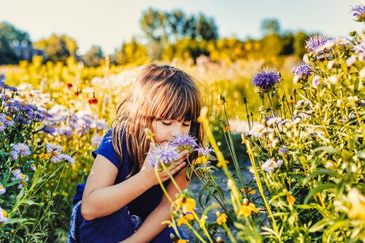

In a world often bustling with noise and chaos, there exists a silent symphony, a masterpiece of tranquility that envelops us in its gentle embrace — the beauty of nature.
Beautifulness and wonderfulness of Nature,a read below
Within this tapestry of life, flowers stand as radiant ambassadors, each petal a stroke of vibrant color, each bloom a testament to the wonder of creation.
In their delicate dance with the wind, flowers whisper secrets of resilience and grace. They emerge from the earth, resilient and tenacious, offering a beacon of hope in the darkest of days.
Through their petals, we witness the spectrum of life's colors, each hue a reflection of nature's boundless creativity.
But the beauty of flowers transcends mere aesthetics; it holds the power to heal, to soothe the weary soul. In their fragrance, we find solace, a balm for the restless mind.
Their presence infuses the air with a sense of calm, reminding us to pause, to breathe, to embrace the moment with gratitude.
Moreover, flowers are not mere ornaments in the grand tapestry of nature; they are essential players in the symphony of life.
They serve as pollinators, nurturing ecosystems and ensuring the survival of countless species.
Their vibrant blooms beckon bees and butterflies,inviting them to partake in the sacred dance of life,ensuring the continuation of the cycle of birth and rebirth.
In their quiet elegance, flowers teach us the value of simplicity and humility.
They remind us of the fleeting nature of existence, urging us to cherish each moment as if it were a precious bloom,destined to wither away with the passing of time.
But perhaps, most importantly, flowers offer us a sanctuary, a refuge from the chaos of modern life. In their presence, we find respite from the noise and haste, a moment of stillness in a world perpetually in motion.
They remind us of our connection to the earth, to each other, and to the universe at large.
In the end, the beauty of nature and its flowers is not merely a feast for the eyes; it is a testament to the resilience of life, a reminder of the profound interconnectedness of all living things.
In their silent majesty,flowers offer us a glimpse of the divine, inviting us to pause, to reflect, and to celebrate the wonder of existence in all its myriad forms.